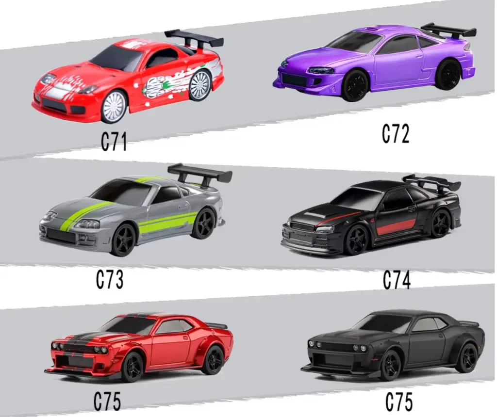
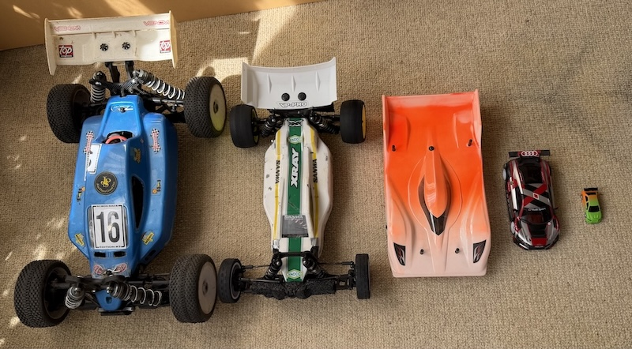

Tout le monde voit tout, tout le temps
Une piste facile à observer et à partager, à hauteur des yeux.
La discipline
Un cadre simple : des mini véhicules très performants de 5 à 6 cm à l’échelle 1/76, et une piste surélevée pour que les pilotes s’affrontent le plus simplement possible.
Définition — le RC table car racing est une discipline de modélisme qui consiste à faire courir des voitures radiocommandées à l’échelle 1/76 (5 à 6 cm de long) sur un tapis tissu posé sur une table. Elle se distingue par trois choses : la direction et l’accélération sont proportionnelles, le matériel reste proche de la série, et la piste se monte et se range en quelques minutes.
Une piste facile à observer et à partager, à hauteur des yeux.
Elle rend le matériel comparable d’un pilote à l’autre.
Ce n’est pas du tout-ou-rien : ça se dose.
On roule tous avec la même base mécanique.
Chez soi, entre amis ou entre collègues.
Le plus rapide n’est pas toujours devant.

Pourquoi ce site existe
Le 1/8, le 1/10, le 1/12 et le 1/24 sont des échelles très populaires, avec leurs championnats. Le 1/76 offre le même socle technique — matériel homogène, règles simples, pilotage exigeant — avec l’énorme avantage de se pratiquer chez soi, et pour une fraction du budget.
Transmettons cette passion : je rêve déjà d’un championnat de France 1/76. Vive le RC table car racing.
| Échelle | Longueur type | Surface nécessaire | Se pratique |
|---|---|---|---|
| 1/76 | 5 à 6 cm | Dès 95 × 50 cm | Sur une table, chez soi |
| 1/64 | ≈ 7 cm | Environ 3 × 2 m | Au sol, pièce dédiée |
| 1/24 | ≈ 18 cm | Piste dédiée | Club, infrastructure |
| 1/12 | ≈ 36 cm | Piste indoor dédiée | Club, compétition |
| 1/10 | ≈ 45 cm | Piste extérieure ou hall | Club, championnats |
| 1/8 | ≈ 50 cm | Grande piste extérieure | Club, compétition |
Ordres de grandeur indicatifs · du 1/12 au 1/8, ces formats populaires demandent une piste dédiée. L’intérêt du 1/76 est de ne demander aucune infrastructure.

Prêt à choisir ta première voiture ?
Le comparateur